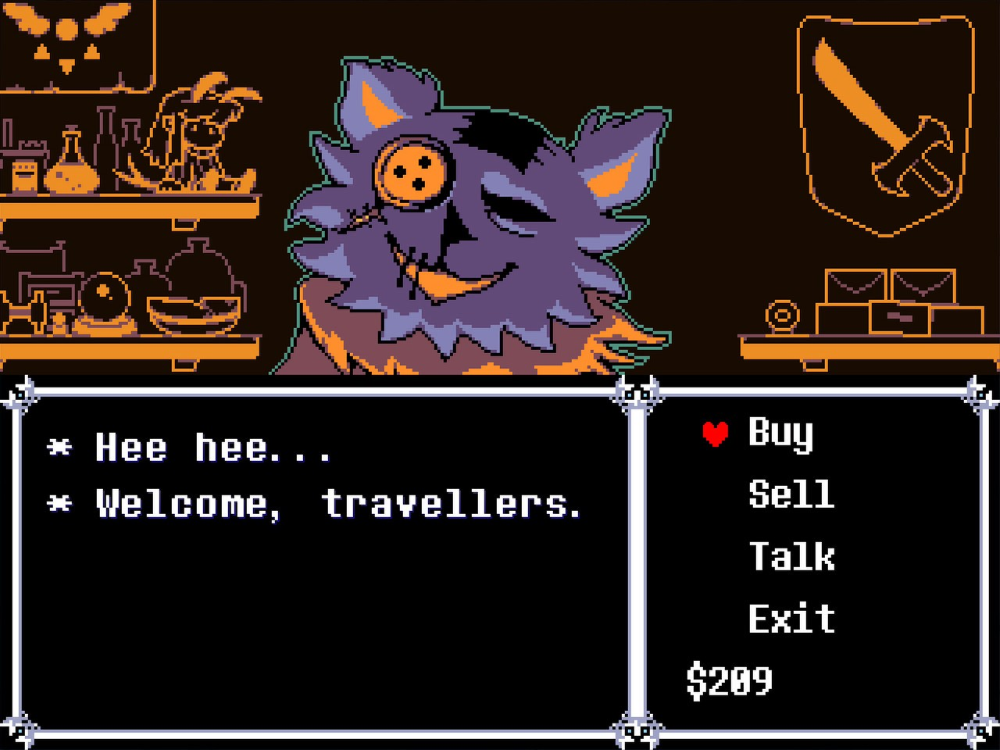
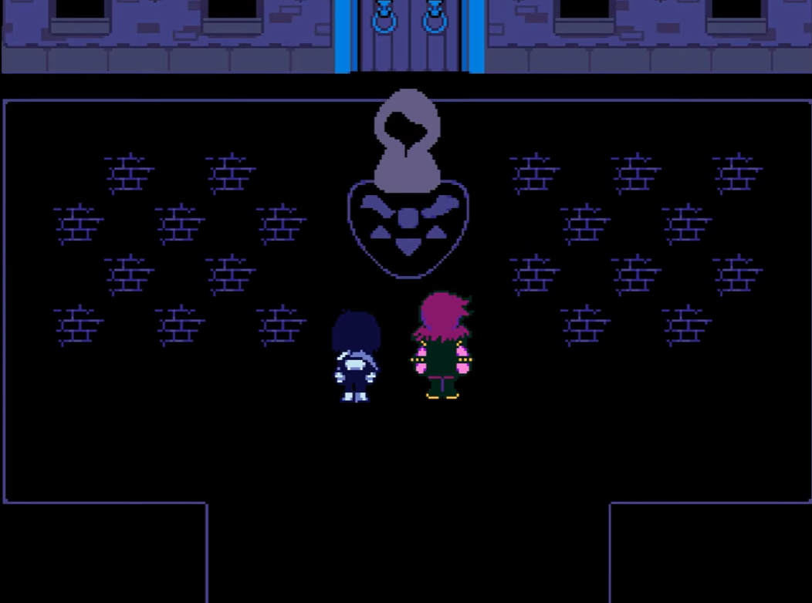
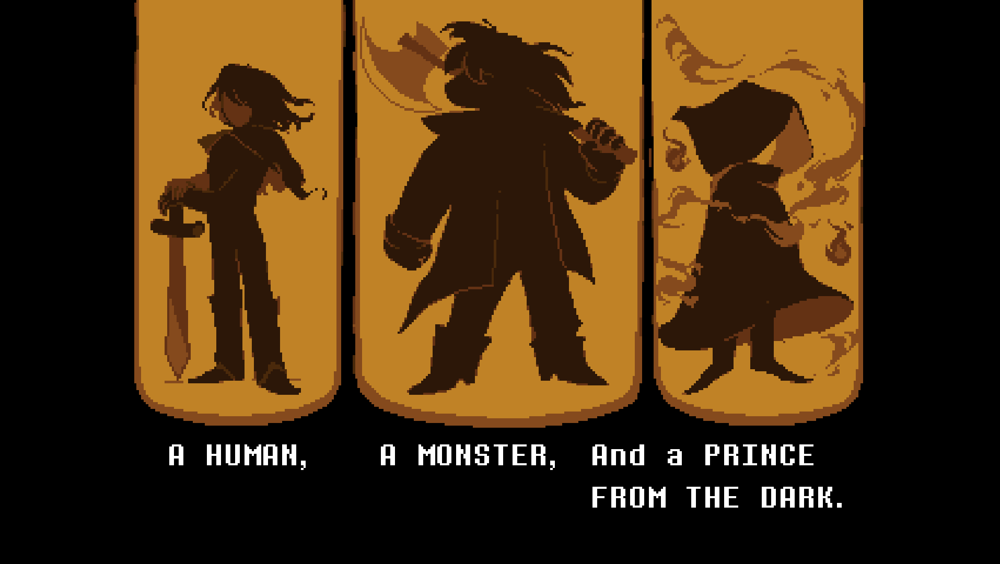
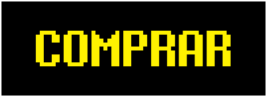

hecho por Maximiliano Plaza y Oscar Galleguillos
- Deltarune es un juego desarrollado por Toby Fox, el creador de Undertale, el 31 de octubre de 2018, el cual es un RPG episodico que actualmente solo tiene 4 episodios.

Sinopsis
- La historia sigue a Kris, un/a estudiante que vive en un mundo aparentemente normal. Un día, junto a su compañera Susie, caen en un misterioso "Mundo Oscuro", Allí conocen a Ralsei, un príncipe que les dice que están destinados a cerrar fuentes oscuridas para restaurar el equilibrio de luz y oscuridad.

PROFECÍA
- Ralsei les cuenta que ellos son los de heroes de una profecía, la cual cuenta que el mundo está formado por 2 fuerzas:
- Si estas fuerzas se desequilibran, ocurrirá una catastrofe, "El Rugido" (The roaring), donde la oscuridad consumirá todo.
Para evitarlo, la profecía dice que aparecerán tres héroes:

solo ellos podrán sellar las fuentes y liberar el paraíso del Angel.
Si este juego te intereso, puedes comprarlo aqui en este botón:
